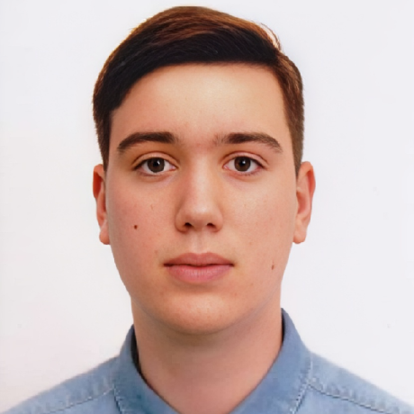

Ghimpau Mihai-Vladimir

Summary
I am a second-year student at Politehnica Timișoara, within the Faculty of
Automatică și Calculatoare, section CTI-RO. I describe myself as an
active, hardworking, and sociable person, looking for new teams to share
ideas and gain new information. My main goal is to learn new concepts in
Computer Science, practice, and improve the skills I have learned so far.
Education
-
Computer and Information Technology - Universitatea Politehnica
Timișoara [ 24/09/2023 - Current ]
-
Mathematics and Computer Science - Colegiul Național Bănățean [ 09/2019
- 06/2023 ]
Work Experience
-
Liga AC Labs - Smart Parking Systems [ Magna Electronics Romania ] April
2025 - June 2025
I took part in a hands-on laboratory project focused on developing an
intelligent parking access system based on image processing and
embedded control. Key activities included:
-
Gaining familiarity with automotive concepts related to image
processing, motor control, and LCD interfacing
- Developing image processing algorithms using Python
-
Programming in Embedded C for controlling motors and displaying
information on an LCD using Arduino
- Integrating sensors and actuators into an embedded system
-
Working with databases to manage access events and user information
This experience strengthened my skills in building integrated systems
and introduced me to real-world applications of intelligent mobility
solutions.
Skills
- Embedded C Programming
- C/C++, Python, Java (Programming Language)
- Object-Oriented Programming (OOP)
- SQL / Database Management
- Microsoft Office
- Arduino and Raspberry Pi Development
Awards and Certifications
- ECDL Profil Bac
- Cambridge C1 Advanced
- Oracle Database Design
Other